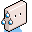

明暗模式切换
← 返回奖杯列表
Well Explorer
Discover and use all wells on Rainbow Moon.
奖杯心得 (TIPS)
这个奖杯有大触手指点一下吗
有的井水需要时间条件...
hachimansense2014-11-16 19:03
@hachimansense
我发过的那份
地图
上有所有的井，有时间要求的有标注说明。那个类似星期几的概念，XX Day是循环的
mordom04042014-11-16 22:37
@mordom0404
就是用的你那幅地图呢...上面标注的只有主线任务拿6个井水里的东西那几口井才有条件标注呢 剩下的是奖章收集标识。。
hachimansense2014-11-16 22:43修改
@mordom0404
地图上都是英文 没中文的么
acg_connarlei2014-11-16 23:24
@hachimansense
会员停了现在不能开游戏没法求证，我自己都还没找全关于时间条件的井，画面右上角有星期几的显示的，转一个礼拜总有一天能进去吧..
@acg_connarlei
地名当然是英文...翻成中文没意义吧
mordom04042014-11-17 10:18修改
yc_chen2015-03-03 03:05

@acg_connarlei地名当然是英文...翻成中文没意义吧